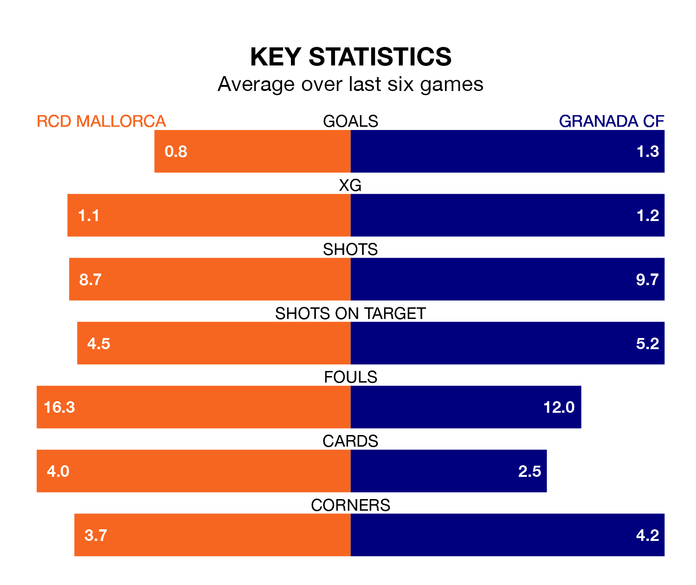

Granada CF travel to Estadi Mallorca Son Moix looking to secure a first win in nine La Liga games against RCD Mallorca on Saturday lunchtime.
Granada have lost five and drawn three matches since they last earned three points – against Cádiz on January 3.
They face a Mallorca side who have won two and drawn two over that time.
Granada are 19th in the table after 27 games, of which they have won two and drawn eight, earning 14 points.
Mallorca are four places ahead of the away team in 15th, with five wins and 12 draws putting them on 27 points.
In the last 10 years, Mallorca and Granada have played each other on seven occasions. Granada won six of them and they drew once.
On average, Mallorca scored 1.0 goal and Granada 2.6 in those matches.
Their last meeting was on August 26, when Granada won 3-2 at home.
With 24 goals in 28 games so far this season, the hosts are the league's third-lowest scorers with 0.9 goals per game. But they are conceding fewer than average too, letting in 35 goals at a rate of 1.2 per game.
Granada are also below average scorers, with 1.1 goals per game, compared to a league average of 1.3. They have conceded 2.1 goals per game.
Mallorca's last match was on March 8, a 1-0 loss against FC Barcelona.
Granada lost 3-2 against Real Sociedad last time out, on Saturday, with Myrto Uzuni on the scoresheet.
Saturday's match will be refereed by Ricardo De Burgos Bengoetxea, who has taken charge of 14 La Liga games so far this season, issuing three red cards and booking 54 players. He has awarded one penalty.
The last Granada game De Burgos Bengoetxea refereed was the 1-0 loss away at UD Las Palmas on September 24. He is yet to oversee a match featuring Mallorca this season.
Updated: 15:10 (UTC), 15/03/24